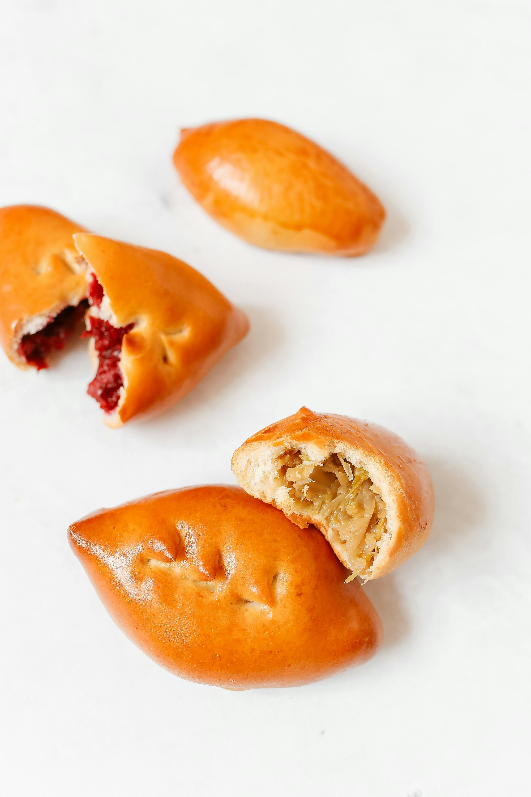

Cabbage Piroshki
An savory Eastern European food, that pleases everyone!

Ingredients
- 1 recipe Yeasted Olive Oil Pastry
- 2 tablespoons unsalted butter
- 1 medium onion, finely chopped
- 1 small cabbage, about 1 pound, cored and finely shredded
- Salt to taste
- 2 tablespoons chopped fresh dill
- 2 hard-boiled eggs, chopped
- Freshly ground pepper
- ½cup ricotta (optional)
- 1egg, beaten, for egg wash
Steps
- Mix up the pastry dough and while it is rising, make the filling.
- Heat butter over medium heat in a large, heavy skillet and add onion. Cook, stirring often, until tender, about 5 minutes.
- Add cabbage and salt to taste and cook, stirring often, until cabbage is tender but not browned, about 15 minutes.
- Stir in dill, chopped hard-boiled eggs, and pepper. Taste and adjust salt.
- Remove from heat and allow to cool slightly. If using ricotta you can either stir it into the cabbage or place a teaspoon on each round of dough before topping with the cabbage mixture.
- When the dough is ready, pinch off 24 equal pieces, approximately 20 grams each, and roll each one into a small ball by cupping your hand over it and gently rolling it against your work surface.
- Cover with plastic wrap and allow the dough to rest for 5 to 10 minutes.
- Line 2 baking sheets with parchment. One by one, roll each ball of dough to a thin round, about 3½ inches in diameter. If you are using ricotta and have not mixed it into the cabbage, place a teaspoon on each round and top with a tablespoon (heaped) of the cabbage.
- Otherwise just top each round with a heaped tablespoon of the cabbage mixture.
- Fold over the round and pinch the edges of the dough together, then tuck in the ends and gently shape each pirozhok into an oval (rather than a half-moon).
- Place on the parchment-covered baking sheet, seam side down. You should get 12 on each sheet.
- After you have finished shaping the first 12, cover lightly with plastic and place in a warm place to rise for 40 to 45 minutes.
- Meanwhile, preheat the oven to 350 degrees and continue shaping the pirozhki. Cover the second batch with plastic and let rise for 40 to 45 minutes.
- Brush pirozhki with egg wash. Bake 1 tray at a time in the middle of the oven for 25 minutes, until light brown and shiny.
- Remove from heat and allow to cool for at least 10 minutes before eating.
Nutrition Facts
42 calories; 3 grams fat; 1 gram saturated fat; 0 grams trans fat; 1 gram monounsaturated fat; 0 grams polyunsaturated fat; 2 grams carbohydrates; 1 gram dietary fiber; 1 gram sugars; 2 grams protein; 86 milligrams sodium